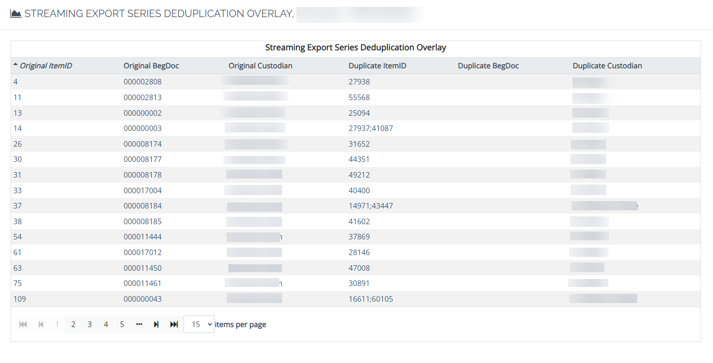

The Streaming Deduplication Overlay report lists all the duplicates in a processing job.
The report queries all documents, including duplicates, in Process and Data Extract Jobs that are part of the Exports; not just processed documents in the Export Jobs. The report returns results for all original documents and duplicates for the selected Export Job(s). The fields are: Item ID, BEGDOC, Custodian, and Path. These fields are preceded by Original and Duplicate. The fields are described as follows:
Original ItemID
Original BegDoc
Original Custodian
Original Path
Duplicate ItemID
Duplicate BEGDOC
Duplicate Custodian
Duplicate Path
The Duplicate fields will be in the same order for viewing/parsing. The values will then line up correctly for each document.
The duplicates are identified using de-duplication results from Processing or Data Extract Job(s) in the Export Job(s).
